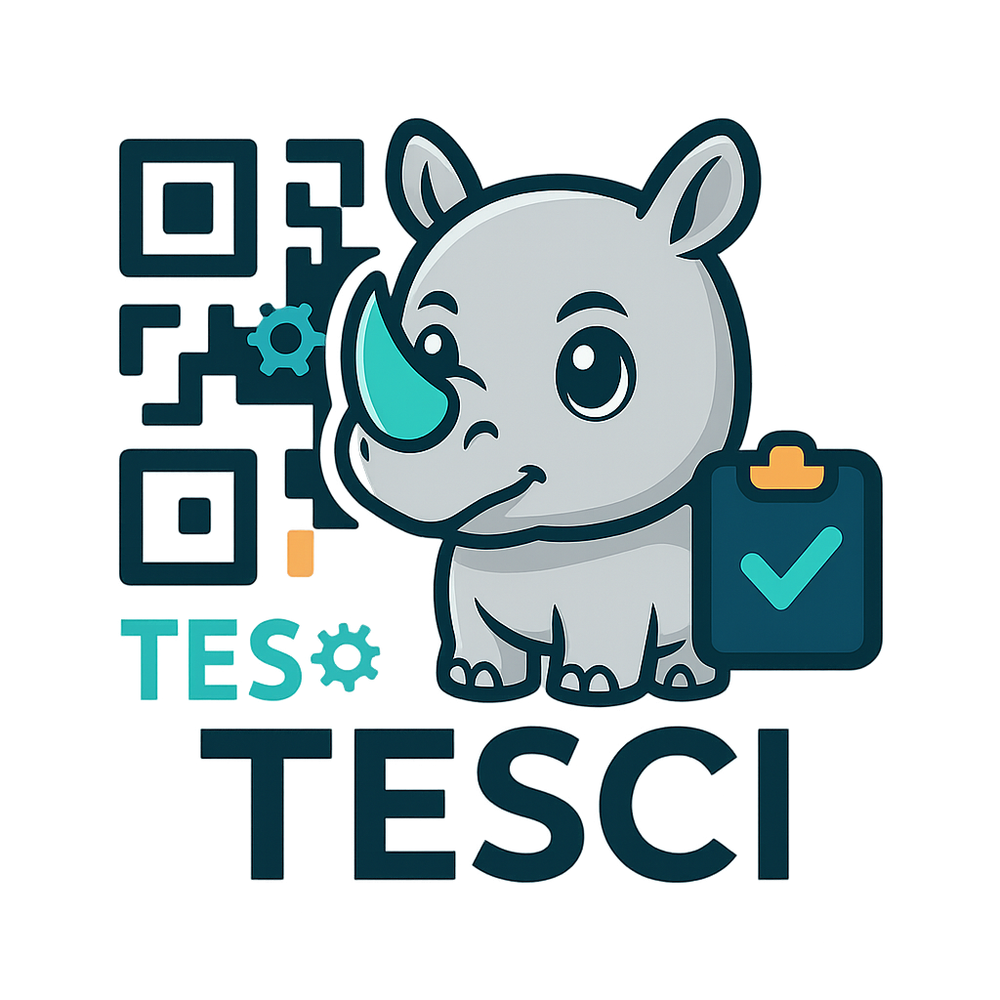

<!-- menu.html  (colócalo en la raíz del proyecto) -->
<link rel="stylesheet"
      href="https://cdnjs.cloudflare.com/ajax/libs/font-awesome/6.4.0/css/all.min.css" />

<!-- Botón hamburger -->
<button id="sidebar-toggle" class="hamburger" aria-label="Abrir menú">
  <i class="fas fa-bars"></i>
</button>

<!-- Sidebar -->
<nav id="sidebar" class="sidebar">
  <div class="sidebar-header">
    
    <h2>Asistencia QR Inteligente</h2>
  </div>

  <ul class="sidebar-menu">
    <!-- ========= ACCESOS GENERALES ========= -->
    <li data-page="welcome">
      <a href="welcome.html"><i class="fas fa-home"></i> Inicio</a>
    </li>

    <li data-page="pase-lista">
      <a href="pase-lista.html"><i class="fas fa-list"></i> Pase de Lista</a>
    </li>

    <li data-page="calendario">
      <a href="calendario.html"><i class="fas fa-calendar"></i> Calendario Escolar</a>
    </li>

    <li data-page="gestionhorarios">
      <a href="gestionhorarios.html"><i class="fas fa-calendar-alt"></i> Gestión Horarios</a>
    </li>

    <li data-page="gestionalumnos">
      <a href="gestionalumnos.html"><i class="fas fa-user-graduate"></i> Gestión Alumnos</a>
    </li>

    <li data-page="reporte">
      <a href="reporte.html"><i class="fas fa-file-alt"></i> Generar Reporte</a>
    </li>

    <li data-page="mandar">
      <a href="mandar.html"><i class="fas fa-paper-plane"></i> Mandar Información</a>
    </li>

    <!-- ========= EXCLUSIVO ADMIN ========= -->
    <li data-page="usuarios">
      <a href="usuarios.html"><i class="fas fa-users-cog"></i> Gestión Usuarios</a>
    </li>

    <li data-page="backup">
      <a href="backup.html"><i class="fas fa-database"></i> Backup</a>
    </li>

    <li data-page="logs">
      <a href="logs.html"><i class="fas fa-clipboard-list"></i> Log QR</a>
    </li>

    <!-- ========= QR_SUPPORT ========= -->
    <li data-page="support-panel">
      <a href="support.html"><i class="fas fa-key"></i> Panel Soporte</a>
    </li>

    <!-- ========= PROFESOR ========= -->
    <li data-page="desempeno">
      <a href="desempeno.html"><i class="fas fa-chart-line"></i> Mi Desempeño</a>
    </li>

    <li data-page="cambiar-pass">
      <a href="cambiar-pass.html"><i class="fas fa-user-lock"></i> Cambiar Contraseña</a>
    </li>

    <!-- ========= COMÚN ========= -->
    <li data-page="soporte">
      <a href="soporte.html"><i class="fas fa-headset"></i> Ayuda / Soporte</a>
    </li>

    <li data-page="config">
      <a href="config.html"><i class="fas fa-cog"></i> Configuración</a>
    </li>

    <li>
      <a href="#" id="logout"><i class="fas fa-sign-out-alt"></i> Cerrar Sesión</a>
    </li>
  </ul>
</nav>

<!-- Header superior -->
<header class="header">
  
  <div class="header-greeting">
    QRCheck for <span id="user-name"></span>
  </div>
</header>

<!-- Sonido global de clic (opcional) -->
<script src="js/click-sound.js" defer></script>
